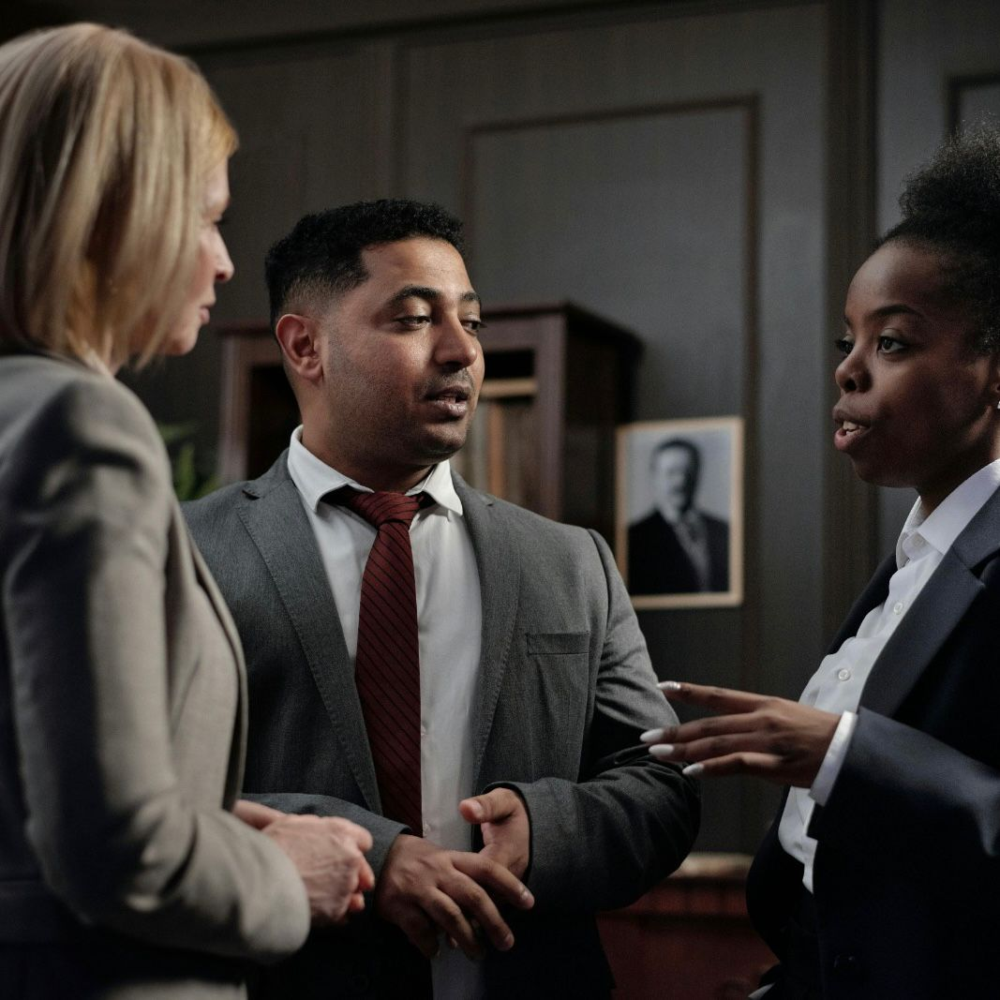
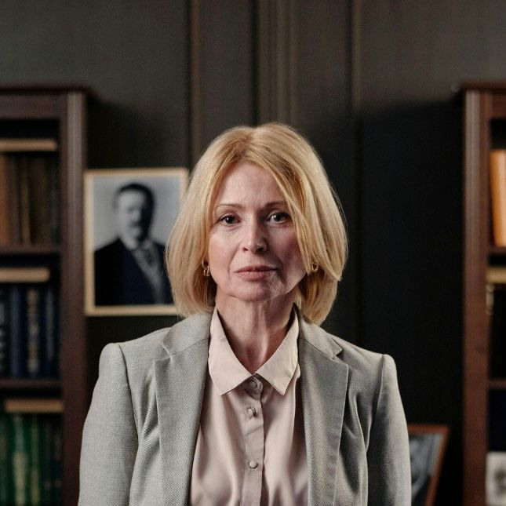

Insurance for Lawyers Company UX Case
Project Overview
Product: Insurance sales website for lawyers. The website is structured for client access only on the Landing Page (other pages are accessible only for purchasing the product). The products offered on the website include compensation in the event of missed deadlines, material damages, coverage of legal costs, support in out-of-court settlements, and image restoration in situations of negative exposure. Products offered: Simplified contracting - no risk assessment required for inclusion; lawyers receive coverage of R$100,000. Coverage for larger amounts - R$300,000, R$500,000, and R$1 million - is subject to risk approval.

- Navagation - Navigation bar with links that only led to the same page, lack of company presentation and description "About page" (which diminishes credibility), only a barely visible contact link on the page (only via WhatsApp link) no other access points to the team available (such as email and company address). The user needs to read long text to access the product.
- Accessibility - Despite the use of contrasting colors (black and white), the size and grouping of the letters make it difficult to read for people with visual impairments (whether permanent, such as nearsightedness, or temporary, such as sensitivity to sunlight). Additionally, there is no Alternative Text in the website code to facilitate the reading of images by screen reader programs.
- Sad images - The company tries to connect with users' pain points by highlighting potential issues that can be remedied with the product's coverage, featuring numerous images of sad and worried lawyers. There's no equal effort to convey the well-being the product can generate, and it also fails to convey the company's mission: to help its clients become confident and successful lawyers.
- Section Layout and Distribution - Although the company offers four insurance packages, all links lead only to the simplified insurance plan, with no mention of the broader coverage options (just a small section at the bottom of the page). The content is distributed in text without visual appeal and striking phrases.

Understanding the user:
For this project, only secondary research was conducted, searching for insurance website templates for lawyers and immersing ourselves in the legal world by accessing lawyer profiles on public platforms such as LinkedIn, Instagram, and law firms. The use of sober and bold colors was noted to demonstrate and convey a sense of security and clarity—the way justice should be felt. It was also noted that the company's primary focus is on simplified coverage, often accessed by young people and recent graduates. However, other sales packages could be geared toward more mature professionals with greater responsibilities. The strategy of opening a dialogue with these professionals was also presented.
*Note: Quantitative and qualitative research, questionnaires, and interviews were not used for this project. However, such proposals are included for future proposals within the company. The personas created for the project are based solely on secondary research.
- João is a 26-year-old lawyer, recently graduated and just starting his legal practice. He currently handles cases alone. João has been expanding his client base and is concerned that the backlog could cause delays and affect his clients. Problem Statement: João is a young lawyer who needs to feel confident to perform better.
- Andre has been practicing law for seven years at a law firm he opened with college colleagues, specializing in labor and employment law. The firm's three colleagues and interns are responsible for all processes and documentation. Currently, the firm has been receiving cases from companies with significant social media coverage. André fears that his firm's image will be damaged by the recent cases. Problem Statement: Andre is a small business owner who needs to protect his image to attract more clients. 
- Mariela is an experienced lawyer and owns a legal advisory firm. She feels her firm needs to expand its legal team, an idea that hasn't resonated with investors. Mariela needs a guarantee to hire new colleagues. Problem Statement: Mariela is a consulting firm owner who needs to create a safe enviroment to expand her team of lawyers. 
*Note: The personas created for the project are based solely on secondary research and empathy exercises.
"One of these days I'm going to miss a deadline!" - João "We could be harmed if one of the companies we serve goes viral for bad reasons" - Andre "I need shareholders to feel safe in expanding our team" - Mariela
João thinks he might make mistakes André thinks about the risk of clients disrupting his business. Mariela thinks about using a strategy to attract more hires.
João tries his best to organize himself and has hired people to organize his deadliens. Andre has rejected some clients. Mariela has increased the overtime hours of the team of lawyers.
João feels insecure about the demand. Andre express concern about the company's image. Mariele shares feelins of overwhelm.
Proposal
The primary objective was to create a robust and visually appealing website that conveys a sense of security and quality.
*Note: All proposals described below were build with the aim of updating and deepening the browsing experience on the company's website, focusing on the user, and therefore include proposals for further research in the future.
- header
Stronger, more impactful. The header is now thought of not only as an introduction to the company, but as a way to establish the tone of seriousness and security that the company offers.
- Color palette
Blue and gold | colors generally associated with excellence and stability were chosen. In addition, contrast is increased for easier readability and a strong, structured aesthetic.
- Images
Images of confident, strong lawyers and people in safe, comfortable environments. The goal is to showcase the firm's mission and purpose to its clients by creating a desirable environment of successful lawyers that users can identify with and desire.
- Product options
In addition to showcasing the best-selling product — simplified hiring —, more space was proposed for other products, encouraging other audiences to identify with and access the company.
- Inclusion of pages
Proposal to include "About" and "Contact" pages (available in the Navigation Bar) for greater user access to company information (maintaining the WhatsApp link upon customer request). This gives customers more confidence to close the deal by gaining a deeper understanding of the company they will be hiring and expanding contact options, including various information: company history, email (formal contact information), address (physical contact information), social media (Instagram, LinkedIn, etc.), among others.
Accessibility
-
Footer
Inclusion of the firm's social media channels and information in the footer.
The new design provides accessibility by offering two color themes (light and dark) for people with visual impairments (whether temporary, such as post-sun sensitivity, or permanent, such as those with low vision) or even based on user preference. It also features larger fonts, smaller text sizes, and a focus on communicating the message objectively and simply. The use of alternative text for screen reader applications and user-friendly code for accessibility programs is proposed.
*Project made by Lenise.


Takeaways | Next steps
This project was designed to enhance the company's message and image and expand its target audience by highlighting all products offered.
For the future, the following suggestions:- Rethinking the product purchase flow.
- Implementing user surveys to improve perceptions and sales strategies.
- Enhancing website accessibility, not only by supporting accessibility programs but also by offering increased font size, automatic reading, and voice commands.
- Creating a direct chat between users and the team.